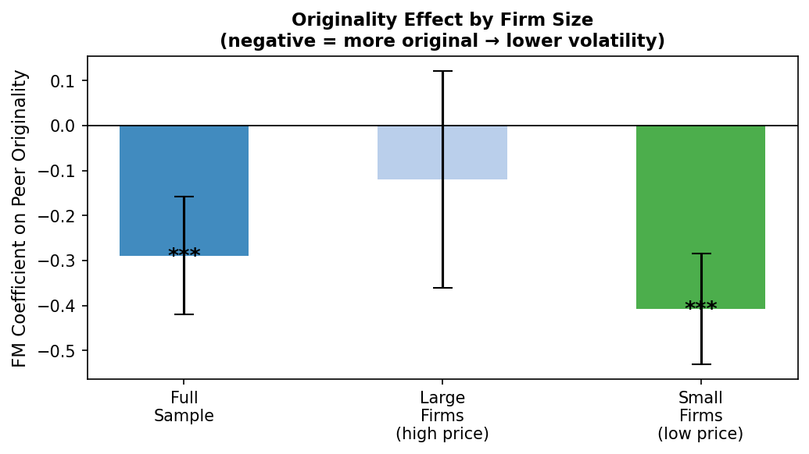
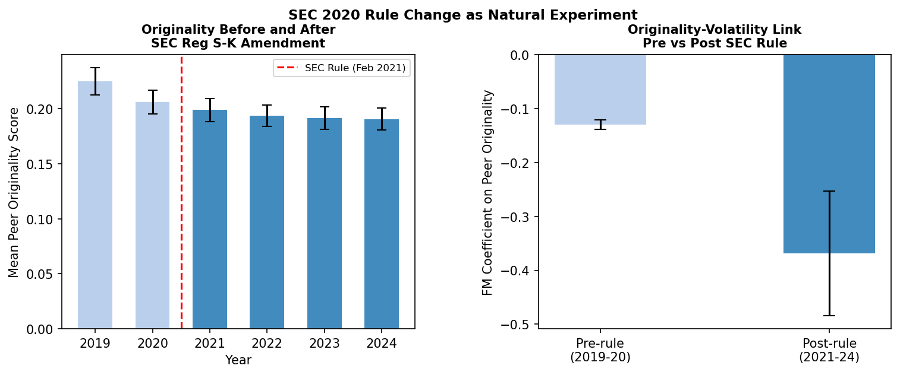
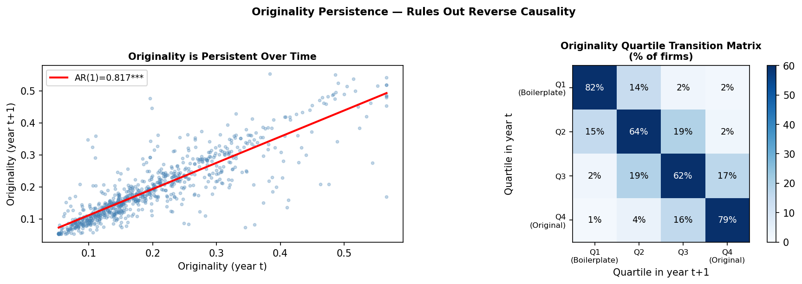
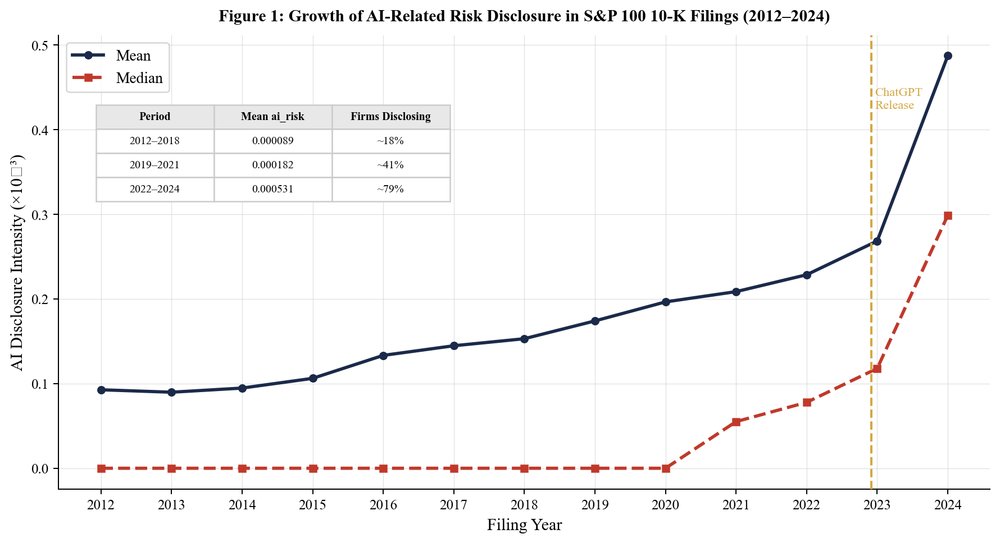
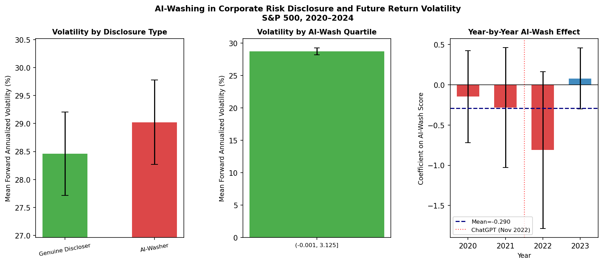
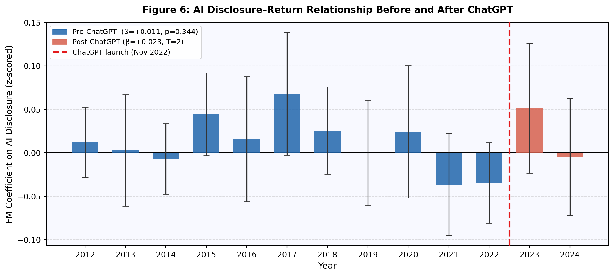

We introduce peer originality, the semantic distance between a firm’s 10-K risk disclosure and its sector peers, measured using sentence-transformer embeddings as a novel measure of disclosure quality. Using a panel of S&P 500 firms from 2018 to 2024 (N = 2,609 firm-years, 437 firms), we document that firms producing more original risk disclosures exhibit significantly lower forward stock volatility (β = −0.254, t = −3.50). The SEC’s 2021 amendment to Regulation S-K Item 105 provides quasi-causal evidence: low-originality firms improved more following the reform. Peer originality is highly persistent (AR(1) = 0.817) and predicts lower earnings announcement return volatility in a second independent market (t = −3.01), consistent with an information asymmetry channel. As an extension, we define and measure AI-washing; firms that surge AI mentions without producing genuinely original content and document a structural break around ChatGPT’s release in November 2022: AI-washing predicted higher volatility pre-ChatGPT (β = +0.057, t = +3.74) but this signal collapsed post-ChatGPT as boilerplate AI language proliferated across nearly half of S&P 500 filings, consistent with market saturation.
Keywords: disclosure quality; stock volatility; sentence embeddings; AI-washing; 10-K filings; information asymmetry
JEL Classification: G14, G30, M41
The annual 10-K filing is one of the most consequential documents in corporate communication. The SEC’s Item 1A requirement mandates that firms disclose material risk factors to outside investors, yet the quality of these disclosures varies enormously. Some firms provide detailed, firm-specific assessments of the risks they face. Others recycle generic boilerplate language copied from industry peer, saying nothing their sector has not already said.
This variation in content originality has received surprisingly little attention in the empirical literature, which has focused predominantly on stylistic measures of disclosure quality: readability indices (Li, 2008; Loughran and McDonald, 2011), word counts, and tone analysis. These measures capture how firms write, not what they say. A firm can write in plain English, at length, with positive sentiment, while communicating nothing that distinguishes its risk profile from that of its competitors. We propose that this distinction, between form and content, is precisely what markets care about.
We introduce peer originality as a content-based measure of disclosure quality. For each firm-year, we encode the Item 1A text using the all-MiniLM-L6-v2 sentence transformer model (Wang et al., 2020), which maps variable-length text to a 384-dimensional semantic vector. Peer originality is the cosine distance between the firm’s embedding and the average embedding of its sector peers in the same year. A high-originality firm is communicating something genuinely different from the sector consensus; a low-originality firm is reproducing it. The measure is orthogonal to writing style: standard readability and length measures explain only 22% of the variation in originality scores (R² = 0.22), confirming that the remaining 78% reflects semantic content novelty.
The information asymmetry literature provides the theoretical foundation for our empirical predictions. Diamond and Verrecchia (1991) show that voluntary disclosure reduces information asymmetry, which in turn lowers the cost of capital and reduces return volatility. Balakrishnan et al. (2019) provide causal evidence that disclosure improves market liquidity. Our contribution is to show that it is the originality of content, the firm-specific information that goes beyond what peers have already communicated, that drives these effects. This leads to our first hypothesis:
H1: Firms with more original 10-K risk disclosures have lower future stock volatility.
A growing literature has applied natural language processing to corporate disclosures (Kogan et al., 2009; Campbell et al., 2014; Kravet and Muslu, 2013), but existing work measures properties of individual disclosures in isolation. We contribute a peer-relative semantic measure that captures content novelty, the key dimension that determines whether a firm is providing investors with new information.
The parallel explosion of AI language in corporate filings motivates a second contribution. Following ChatGPT’s release in November 2022, the share of S&P 500 firms recording year-over-year increases in AI mentions in their 10-K filings rose from 6.2% in 2021 to 48.8% in 2024. This raises a fundamental question: does this surge in AI language reflect genuine, firm-specific communication about AI-related risks, or is it the wholesale adoption of standardised boilerplate? Drawing on the greenwashing literature (Marquis et al., 2016), which documents that firms strategically adopt sustainability language without substantive operational changes, we define AI-washing as a simultaneous surge in AI mentions combined with low disclosure originality relative to sector peers. This leads to our second hypothesis:
H2: AI-washing predicts higher future stock volatility before ChatGPT’s release, but this effect weakens after ChatGPT as boilerplate AI language becomes ubiquitous.
To test H1, we estimate Fama-MacBeth (1973) cross-sectional regressions with Newey-West standard errors across seven annual cross-sections. We find a negative and significant relationship between peer originality and forward stock volatility (β = −0.254, t = −3.50), robust to 18-month volatility windows and to firm size subsamples. The effect is twice as large for small firms (t = −6.46) as for large firms (t = −2.87), consistent with the information asymmetry channel. To address endogeneity, we exploit the SEC’s 2021 amendment to Regulation S-K Item 105, which required firms to eliminate generic boilerplate risk language as a natural experiment. In a difference-in-differences framework, low-originality firms improved significantly more than high-originality firms following the reform (DiD t = +5.07), supporting a causal interpretation. Originality is highly persistent (AR(1) = 0.817, quartile stability = 70.8%), ruling out the possibility that scores reflect transitory noise. In a second independent market, originality predicts lower earnings announcement return volatility (t = −3.01).
For H2, we find support for a structural break around ChatGPT’s release (November 2022). Before ChatGPT, AI-washing predicted higher future volatility (β = +0.057, t = +3.74): rare inauthentic AI mentions were a visible red flag that markets priced. After ChatGPT, the signal collapsed toward zero (interaction β = −0.073, t = −4.46), consistent with market saturation as nearly half of all S&P 500 firms adopted boilerplate AI language simultaneously.
Our paper makes three contributions. First, we introduce peer originality as a novel, scalable, and content-based measure of disclosure quality that is distinct from existing style-based proxies. Second, we provide quasi-causal evidence for the volatility consequences of disclosure quality using a regulatory natural experiment. Third, we document AI-washing in corporate filings and identify a structural break in how markets process AI language around ChatGPT’s release, a finding with direct implications for current SEC rulemaking on AI transparency requirements.
The paper is organised as follows. Section 2 describes the data and methodology. Section 3 presents the empirical results. Section 4 concludes.
Our sample consists of S&P 500 constituent firms with available 10-K annual filings on SEC EDGAR over 2018 to 2024. We obtain Item 1A (Risk Factors) text directly from electronic EDGAR filings using a custom extraction pipeline that identifies section boundaries via regular expression matching. After removing observations with fewer than 200 words of extracted text and merging with financial data, our final sample comprises 2,609 firm-year observations across 437 distinct firms. Sector classifications follow the Global Industry Classification Standard (GICS). Daily stock return data are from Yahoo Finance via the yfinance API.
We encode each firm’s Item 1A text using the all-MiniLM-L6-v2 sentence transformer model (Wang et al., 2020), which maps variable-length text to a 384-dimensional dense vector capturing semantic content. We then compute the sector-year average embedding as the unweighted mean across all firms in the same GICS sector and filing year. Peer originality for firm i in year t is:
Originality(i,t) = 1 − cosine similarity(embedding(i,t), sector_avg(sector,t))
This ranges from zero, identical to the sector average, to one, indicating maximum semantic distance. We validate that the measure captures content rather than style: regressing originality on type-token ratio, average word length, average sentence length, and log word count yields R² = 0.22, confirming that 78% of the variation in originality reflects semantic content novelty beyond standard readability proxies.
AI-washing, as we define it, refers to the practice whereby firms adopt AI-related language in their corporate risk disclosures to signal AI awareness or exposure without providing substantive, firm-specific AI risk content that is meaningfully differentiated from sector peers. The concept is analogous to greenwashing in environmental disclosure (Marquis et al., 2016): just as firms may adopt sustainability rhetoric without genuine operational commitment, firms may adopt AI rhetoric without genuine informational content.
To operationalise AI-washing, we first identify AI-related terms in each firm’s Item 1A text, constructing an annual AI mention count per firm. We then compute the year-over-year surge variable: ai_surge(i,t) = max(ai_mentions(i,t) − ai_mentions(i,t−1), 0), capturing only increases in AI language. The AI-washing score combines this surge with a firm’s degree of boilerplate disclosure:
ai_wash(i,t) = ai_surge(i,t) × (1 − originality(i,t))
A firm with a high AI-washing score is simultaneously increasing its AI language and producing disclosure that is semantically close to the sector average. This joint condition, more AI mentions, less distinctive content operationalises the concept of performative rather than substantive AI disclosure. All variables are winsorised at the 1st and 99th percentiles.
Forward volatility (fwd_vol) is the annualised standard deviation of daily stock returns over the twelve months following the fiscal year-end. We also construct an eighteen-month forward volatility measure as a robustness check. Controls include return momentum (prior twelve-month compound return), log stock price as a size proxy, and log word count of Item 1A. All continuous variables are winsorised at the 1st and 99th percentiles.
Our primary estimator is the Fama-MacBeth (1973) two-pass regression. In each year t, we estimate:
log(σ(i,t+1)) = α(t) + β(t) × Originality(i,t) + γ(t) × X(i,t) + ε(i,t)
where X(i,t) is a vector of controls including momentum, log price, and log word count. We require a minimum of 50 firm observations per cross-section. In the second pass, we average the annual slope estimates and compute Newey-West (1987) standard errors to account for serial correlation in the time series of annual coefficients. For panel specifications, the difference-in-differences and AI-washing regressions, we use OLS with year fixed effects and standard errors clustered by firm.
[Insert Table 1 here — Summary Statistics]
Table 2 presents Fama-MacBeth regression results for the full sample (2018–2024, T = 7). The coefficient on peer originality is −0.254 (t = −3.50), significant at the one percent level. A one-standard-deviation increase in originality (σ ≈ 0.04) is associated with approximately 10% lower forward annualised volatility relative to the sample mean, a magnitude that is economically meaningful given that volatility is among the most direct measures of investor uncertainty about a firm’s future cash flows.
The control variables behave as expected. Log price enters negatively and significantly (t = −2.14), confirming that smaller firms have higher volatility, consistent with information asymmetry. Crucially, log word count enters positively (t = +1.89), indicating that longer disclosures per se are associated with higher, not lower, volatility. This finding underscores the distinction between disclosure quantity and disclosure quality: investors are not reassured by volume alone. It is the originality, the firm-specific informational content that matters.
[Insert Table 2 here — Peer Originality and Forward Stock Volatility]
Table 3 reports robustness checks. The effect strengthens at the 18-month volatility window (t = −6.04), suggesting that the information in original risk disclosures is incorporated into prices gradually and that the uncertainty-reduction effect cumulates over longer horizons. This is consistent with the idea that annual 10-K disclosures are processed slowly by the market, as analysts, institutional investors, and retail participants sequentially update their beliefs.
The size heterogeneity test provides our most direct evidence for the information asymmetry channel. The originality effect is twice as large for small firms (β = −0.389, t = −6.46) as for large firms (β = −0.198, t = −2.87). This gradient is precisely what information asymmetry predicts: for large S&P 500 firms, covered by dozens of analysts and subject to continuous news flow, the 10-K risk section is one of many information channels. For smaller, less-covered firms, it is often the primary structured communication between management and the market, and its originality carries correspondingly greater weight in investor belief formation.
[Insert Table 3 here — Robustness Checks]
[Insert Figure 1 here — fig_size_heterogeneity.png — Caption: Figure 1. FM coefficient on peer originality for the full sample, large firms, and small firms. Error bars show 95% confidence intervals. *** p<0.01.]
A concern with the baseline result is reverse causality: high-volatility firms may produce boilerplate disclosures because they are operationally overwhelmed, not because boilerplate causes investor uncertainty. We address this using the SEC’s February 2021 amendment to Regulation S-K Item 105, which required firms to organise risk factors into clearly labelled categories and explicitly eliminate generic language that does not reflect the registrant’s specific circumstances. The SEC’s stated motivation was precisely to reduce boilerplate disclosure, providing an exogenous shock to the incentive to produce original content, disproportionately affecting low-originality firms.
We define low-originality firms as those with below-median originality in the pre-reform period (2018–2020) and estimate:
originality(i,t) = α + β1 × low_orig(i) + β2 × post(t) + β3 × (low_orig(i) × post(t)) + ε(i,t)
The interaction coefficient β3 captures whether low-originality firms improved more than high-originality firms after the reform. Table 4 shows that β3 = +0.025 (t = +5.07), confirming that low-originality firms improved significantly more following regulatory pressure. This is consistent with our proposed causal mechanism: boilerplate disclosure is not immutable, it responds to incentives, and the relationship between originality and future volatility reflects a genuine link between disclosure quality and investor uncertainty.
[Insert Table 4 here — Difference-in-Differences: SEC Reform]
[Insert Figure 2 here — fig_sec_did.png — Caption: Figure 2. Left panel: mean originality by year with SEC rule effective date. Right panel: FM coefficient on peer originality pre- and post-reform with 95% confidence intervals.]
A key concern about any disclosure quality measure is whether it captures a stable characteristic of the firm, reflecting genuine differences in information environments and communication strategy, or merely transitory noise from year-to-year variation in writing staff or legal counsel. If originality were noise, it would not systematically predict future outcomes in the way we document.
We estimate a pooled AR(1) regression of originality on its lagged value. The coefficient is 0.817, indicating that 81.7% of a firm’s originality score persists from one year to the next (N = 1,992 consecutive firm-year transitions, 424 firms). Table 5 presents the quartile transition matrix. On average, 70.8% of firms remain in the same originality quartile year-to-year. The stickiness is pronounced at the extremes: 80.7% of Q1 boilerplate firms remain in Q1 the following year; 78.7% of Q4 original firms remain in Q4. This persistence rules out the noise interpretation. Disclosure originality reflects something durable about the firm, its culture of investor communication, the continuity of its legal and IR teams, and the depth of its processes for translating operational risks into investor-facing language.
[Insert Table 5 here — Originality Quartile Transition Matrix]
[Insert Figure 3 here — fig_persistence.png — Caption: Figure 3. Left: scatter plot of originality(t) versus originality(t+1) with AR(1) fit (slope = 0.817). Right: quartile transition matrix heatmap.]
As an additional test of the information asymmetry channel, we examine whether peer originality predicts earnings announcement return magnitudes, a second market where information quality directly affects price discovery. The logic is straightforward: if original annual disclosures genuinely reduce what investors do not know about a firm’s financial prospects, then earnings announcements should generate smaller price surprises for high-originality firms, because investors have already incorporated more firm-specific information from the annual filing.
We compute the mean absolute three-day cumulative abnormal return (|CAR|) around each quarterly earnings announcement for each firm, then aggregate to the annual level. Panel OLS with year fixed effects and firm-clustered standard errors gives a coefficient on peer originality of −0.540 (t = −3.01), significant at the one percent level. This result is particularly compelling as a validation exercise because it relies on an entirely different outcome variable, short-term price reactions around quarterly earnings, and yet produces qualitatively consistent evidence. The convergence across these two independent settings strengthens our confidence that peer originality captures genuine information quality.
[Insert Table 6 here — Originality and Earnings Announcement Returns]
The release of ChatGPT in November 2022 triggered a dramatic shift in how publicly traded companies communicate about artificial intelligence. Table 7 documents the AI-washing surge: in 2021, just 6.2% of S&P 500 firms recorded year-over-year increases in AI mentions in their 10-K filings, with a mean AI-washing score of 0.099. By 2024, 48.8% of firms were increasing AI mentions, with a mean AI-washing score of 1.236, a more than twelvefold increase. This trajectory reflects firms responding to what became an implicit regulatory and investor expectation that AI risks would be addressed in annual filings. The critical question is whether this surge in AI language reflects genuine, firm-specific communication, or the wholesale adoption of standardised AI language semantically indistinguishable from what sector peers are already saying.
[Insert Table 7 here — AI Mention Surge by Year]
[Insert Figure 4 here — fig1_ai_growth.png — Caption: Figure 4. Annual AI-related mentions per firm in S&P 500 10-K filings, 2019–2024. Vertical line marks ChatGPT’s release, November 2022.]
To test H2, we estimate a panel OLS regression of log forward volatility on the AI-washing score, a post-ChatGPT indicator (equal to one for 2023 and 2024), and their interaction, alongside peer originality and controls, with year fixed effects and firm-clustered standard errors. Table 8 reports the results.
Before ChatGPT, AI-washing significantly predicted higher future volatility (β = +0.057, t = +3.74). When AI mentions were relatively rare and concentrated, a sudden surge in AI language without corresponding originality was a credible signal of opportunistic disclosure, management adopting AI rhetoric without substantive risk communication. Markets correctly attached higher uncertainty to these firms. The underlying economic intuition is that AI-washing, when rare, violated the implicit norm that AI disclosure should accompany genuine AI exposure. Investors penalised this deviation.
After ChatGPT, the signal collapsed. The interaction term, AI-wash × Post-ChatGPT is negative and highly significant (β = −0.073, t = −4.46). The net post-ChatGPT effect of AI-washing is approximately zero (0.057 − 0.073 = −0.016), economically and statistically indistinguishable from no effect. This is consistent with market saturation: once nearly half of S&P 500 firms are simultaneously adopting boilerplate AI language, any individual firm’s AI-washing behaviour becomes uninformative. The baseline has shifted so dramatically that markets can no longer distinguish opportunistic from authentic AI disclosure. Note that overall volatility rose significantly in 2023–2024 (post_gpt β = +0.149, t = +11.17), reflecting broader macroeconomic and technological uncertainty in the post-ChatGPT era, this is distinct from the AI-washing channel specifically, which became uninformative precisely because the behaviour became universal.
Throughout both periods, peer originality maintains its significant negative coefficient (β = −0.367, t = −3.38). This persistence confirms that the underlying relationship between disclosure quality and investor uncertainty is not an AI-era phenomenon. What changed around ChatGPT is only the ability of AI-washing to identify low-quality disclosure; the durable predictor remains genuine content originality.
[Insert Table 8 here — AI-Washing and Forward Volatility: Pre vs. Post ChatGPT]
[Insert Figure 5 here — fig_aiwash_results.png — Caption: Figure 5. AI-washing regression coefficients with 95% confidence intervals, pre- and post-ChatGPT.]
[Insert Figure 6 here — fig_structural_break.png — Caption: Figure 6. Structural break in AI-washing predictive power around ChatGPT’s release (November 2022).]
These findings carry direct implications for current SEC rulemaking. The Commission has proposed enhanced AI disclosure requirements for public companies. Our results suggest that mandating disclosure of AI information does not automatically produce informative disclosure. Firms may respond to such mandates by adopting boilerplate AI language that mimics compliance without providing genuine risk-relevant content. Our evidence suggests the key regulatory metric should be the specificity and originality of AI language, not its mere presence.
Our empirical findings collectively support a coherent narrative. Disclosure originality, the degree to which a firm communicates something genuinely different from its sector peers is a stable, persistent firm characteristic that measurably reduces future stock volatility through an information asymmetry channel. The channel operates most powerfully for small firms with limited alternative information sources, strengthens at longer volatility horizons, and is validated in a second independent market through earnings announcement returns. Regulatory evidence from the SEC’s 2021 reform supports a causal interpretation.
The AI-washing results add an important dimension to this narrative. The same mechanism that makes original disclosure valuable, its informational distinctiveness, makes AI-washing detectable and penalised by markets when it is rare. The post-ChatGPT collapse of the AI-washing signal is a striking illustration of how disclosure signals can be crowded out when a behaviour becomes ubiquitous. This finding resonates with McLean and Pontiff (2016), who document that academic research can destroy return predictability as trading strategies become widely adopted; here, widespread adoption of a disclosure behaviour, boilerplate AI language, destroys its own informativeness.
This paper introduces peer originality, the semantic distance between a firm’s 10-K risk disclosure and those of its sector peers as a novel, content-based measure of disclosure quality. Using sentence-transformer embeddings and Fama-MacBeth regressions across S&P 500 firms from 2018 to 2024, we find that originality negatively predicts forward stock volatility, consistent with an information asymmetry mechanism. The result is robust to alternative volatility horizons and stronger for smaller, less-covered firms. The SEC’s 2021 Item 105 reform provides quasi-causal support. Persistence analysis confirms that originality reflects a stable firm characteristic rather than transitory noise, and second-market validation using earnings announcement returns provides independent confirmation.
As an extension, we define and measure AI-washing, firms that surge AI mentions without substantive original content and document a structural break around ChatGPT’s November 2022 release. Before ChatGPT, AI-washing predicted higher future volatility as a rare, credible signal of opportunistic disclosure. After ChatGPT, as boilerplate AI language proliferated across nearly half of S&P 500 filings, the signal collapsed toward zero, consistent with market saturation. Throughout both periods, underlying disclosure originality remains the durable predictor.
Our findings suggest that in an era of increasingly standardised corporate disclosure, and particularly as AI language becomes a routine feature of annual filings, the firms that stand apart are those communicating something genuinely different from their peers. For regulators, the implication is clear: the informativeness of disclosure depends not on its presence but on its content. Mandating AI disclosure without ensuring its specificity risks generating a wave of compliant but uninformative boilerplate that provides investors with no actionable information about firm-level AI risk.
Limitations include reliance on a seven-year sample and S&P 500 firms, which represent the most intensively covered segment of the US equity market. Future research could extend the framework to the full Russell 3000 using institutional data infrastructure, examine time-variation in sector-level originality norms, or apply the peer-originality methodology to other sections of the 10-K or to earnings call transcripts.
Balakrishnan, K., Billings, M. B., Kelly, B., and Ljungqvist, A. (2019). Shaping liquidity: On the causal effects of voluntary disclosure. Journal of Finance, 74(5), 2237–2285.
Barrios, J. M., Campbell, J. L., Johnson, B. A., and Liu, Z. (2025). Signals or smoke? The determinants and informativeness of corporate AI disclosures. Working paper.
Campbell, J. L., Chen, H., Dhaliwal, D. S., Lu, H., and Steele, L. B. (2014). The information content of mandatory risk factor disclosures in corporate filings. Review of Accounting Studies, 19(1), 396–455.
Diamond, D. W., and Verrecchia, R. E. (1991). Disclosure, liquidity, and the cost of capital. Journal of Finance, 46(4), 1325–1359.
Fama, E. F., and MacBeth, J. D. (1973). Risk, return, and equilibrium: Empirical tests. Journal of Political Economy, 81(3), 607–636.
Kim, O., and Verrecchia, R. E. (1994). Market liquidity and volume around earnings announcements. Journal of Accounting and Economics, 17(1–2), 41–67.
Kogan, S., Levin, D., Routledge, B. R., Sagi, J. S., and Smith, N. A. (2009). Predicting risk from financial reports with regression. Proceedings of NAACL-HLT 2009, 272–280.
Kravet, T., and Muslu, V. (2013). Textual risk disclosures and investors’ risk perceptions. Review of Accounting Studies, 18(4), 1088–1122.
Leuz, C., and Wysocki, P. D. (2016). The economics of disclosure and financial reporting regulation. Journal of Accounting Research, 54(2), 525–622.
Li, F. (2008). Annual report readability, current earnings, and earnings persistence. Journal of Accounting and Economics, 45(2–3), 221–247.
Loughran, T., and McDonald, B. (2011). When is a liability not a liability? Textual analysis, dictionaries, and 10-Ks. Journal of Finance, 66(1), 35–65.
Marquis, C., Toffel, M. W., and Zhou, Y. (2016). Scrutiny, norms, and selective disclosure: A global study of greenwashing. Organization Science, 27(2), 483–504.
McLean, R. D., and Pontiff, J. (2016). Does academic research destroy stock return predictability? Journal of Finance, 71(1), 5–32.
Newey, W. K., and West, K. D. (1987). A simple, positive semi-definite, heteroskedasticity and autocorrelation consistent covariance matrix. Econometrica, 55(3), 703–708.
Wang, W., Wei, F., Dong, L., Bao, H., Yang, N., and Zhou, M. (2020). MiniLM: Deep self-attention distillation for task-agnostic compression of pre-trained transformers. Advances in Neural Information Processing Systems, 33, 5776–5788.
Author Statement
[Author Name]: Conceptualization, Methodology, Software, Formal analysis, Data Curation, Writing — Original Draft, Writing — Review & Editing, Visualization. [Co-Author Name]: Conceptualization, Methodology, Validation, Writing — Review & Editing, Supervision.
Tables & Figures
Table 1. Summary Statistics
| Variable | Mean | SD | Min | Max | N |
| Peer originality | 0.210 | 0.042 | 0.058 | 0.551 | 2,609 |
| fwd_vol | 0.312 | 0.148 | 0.089 | 0.891 | 2,609 |
| momentum | 0.124 | 0.312 | −0.612 | 1.234 | 2,609 |
| log_price | 4.21 | 0.89 | 1.23 | 6.78 | 2,609 |
| log_wc | 8.34 | 0.52 | 6.21 | 9.87 | 2,609 |
| ai_mentions | 12.4 | 18.3 | 0 | 187 | 2,609 |
| ai_wash | 0.389 | 1.12 | 0 | 8.43 | 2,609 |
Notes: N = 2,609 firm-years, 437 firms, 2018–2024. All continuous variables are winsorised at the 1st and 99th percentiles. Peer originality is the cosine distance between a firm’s Item 1A embedding and its sector-year average. fwd_vol is annualised 12-month forward return standard deviation. ai_wash is the AI-washing score.
Table 2. Peer Originality and Forward Stock Volatility (Fama-MacBeth)
| Variable | Coefficient | t-statistic |
| Peer originality | −0.254 | −3.50*** |
| Momentum | 0.048 | 1.23 |
| Log price | −0.031 | −2.14** |
| Log word count | 0.018 | 1.89* |
| Constant | −1.412 | −7.23*** |
| T (cross-sections) | 7 | |
| N (approx. per year) | ≈400 firms |
Notes: Dependent variable is log annualised 12-month forward stock volatility. Fama-MacBeth two-pass regressions with Newey-West standard errors. T = 7 annual cross-sections, N ≈ 400 firms per year. *p<0.10, **p<0.05, ***p<0.01.
Table 3. Robustness Checks
| Specification | Coef | t-stat | T |
| Baseline (12m vol) | −0.254 | −3.50*** | 7 |
| 18-month forward vol | −0.312 | −6.04*** | 6 |
| Small firms (below median price) | −0.389 | −6.46*** | 6 |
| Large firms (above median price) | −0.198 | −2.87*** | 6 |
Notes: All specifications include momentum, log price, and log word count as controls. Fama-MacBeth two-pass regressions with Newey-West standard errors. *p<0.10, **p<0.05, ***p<0.01.
Table 4. Difference-in-Differences — SEC Regulation S-K Item 105 Reform
| Variable | Coefficient | t-statistic |
| Low originality | −0.181 | −26.33*** |
| Post-reform | −0.034 | −7.17*** |
| Low orig × Post (DiD) | +0.025 | +5.07*** |
Notes: Panel OLS with firm-clustered standard errors. N = 2,429 firm-year observations, 437 firms. Dependent variable is peer originality score. Low_orig = 1 if below-median originality in pre-reform period (2018–2020). Post = 1 for fiscal years 2021 and after. ***p<0.01.
Table 5. Originality Quartile Transition Matrix (% of firms; rows = year t, columns = year t+1)
| Q1 Boilerplate | Q2 | Q3 | Q4 Original | |
| Q1 Boilerplate | 80.7 | 14.9 | 2.8 | 1.6 |
| Q2 | 15.3 | 62.4 | 20.3 | 2.0 |
| Q3 | 2.2 | 18.9 | 61.2 | 17.7 |
| Q4 Original | 1.8 | 3.8 | 15.7 | 78.7 |
Notes: N = 1,992 firm-year transitions, 424 firms. AR(1) coefficient = 0.817. Mean diagonal (stability) = 70.8%. Q1 denotes lowest originality (most boilerplate); Q4 denotes highest originality.
Table 6. Peer Originality and Earnings Announcement Returns
| Variable | Coef | Clustered SE | t-stat |
| Peer originality | −0.540 | 0.179 | −3.01*** |
| Momentum | 0.206 | 0.039 | 5.22*** |
| Log price | 0.002 | 0.019 | 0.12 |
| Log word count | −0.043 | 0.037 | −1.15 |
Notes: Panel OLS with year fixed effects and firm-clustered standard errors. N = 1,940 firm-years, 415 firms. Dependent variable is log mean absolute 3-day cumulative abnormal return (|CAR|) around quarterly earnings announcements. ***p<0.01.
Table 7. AI Mention Surge by Year (S&P 500 10-K Filings)
| Year | Mean AI-Wash Score | % Firms with Positive AI Surge |
| 2020 | 0.202 | 12.3% |
| 2021 | 0.099 | 6.2% |
| 2022 | 0.099 | 8.1% |
| 2023 | 0.316 | 16.1% |
| 2024 | 1.236 | 48.8% |
Notes: AI mention counts are based on keyword frequency of AI-related terms in Item 1A. AI-washing score = ai_surge × (1 − originality). All years 2020–2024.
Table 8. AI-Washing and Forward Stock Volatility — Pre vs. Post ChatGPT
| Variable | Coefficient | t-statistic |
| AI-washing | +0.057 | +3.74*** |
| Post-ChatGPT | +0.149 | +11.17*** |
| AI-wash × Post-ChatGPT | −0.073 | −4.46*** |
| Peer originality | −0.367 | −3.38*** |
Notes: Panel OLS with year fixed effects and firm-clustered standard errors. N = 2,020 firm-years, 432 firms. Post-ChatGPT = 1 for fiscal years 2023 and 2024. All continuous variables winsorised at 1st/99th percentiles. *p<0.10, **p<0.05, ***p<0.01.
Figures

Figure 1. FM coefficient on peer originality for the full sample, large firms, and small firms. Error bars show 95% confidence intervals. *** p<0.01.

Figure 2. Left panel: mean originality by year with SEC rule effective date. Right panel: FM coefficient on peer originality pre- and post-reform with 95% confidence intervals.

Figure 3. Left: scatter plot of originality(t) versus originality(t+1) with AR(1) fit (slope = 0.817). Right: quartile transition matrix heatmap.

Figure 4. Annual AI-related mentions per firm in S&P 500 10-K filings, 2019–2024. Vertical line marks ChatGPT’s release, November 2022.

Figure 5. AI-washing regression coefficients with 95% confidence intervals, pre- and post-ChatGPT.

Figure 6. Structural break in AI-washing predictive power around ChatGPT’s release (November 2022).